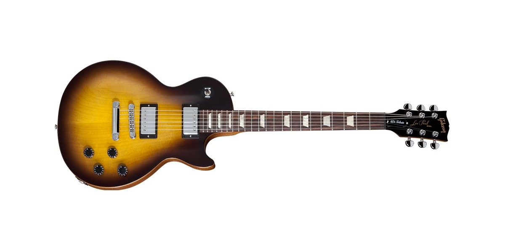
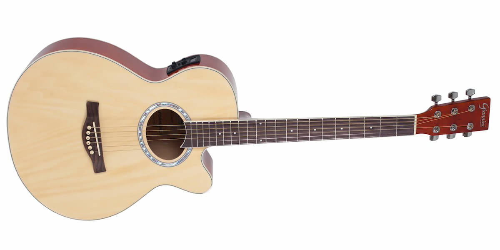

GUITARRA GIBSON LES PAUL STUDIO 60S TRIBUTE BUCKER VINTAGE

A Les Paul Stúdio 60s Tribute BBucker celebra o centenário deste modelo que revolucionou o mundo da guitarra! Este modelo faz referência a clássica Les Paul de 1960, com o mesmo shape, fabricada em mogno e captação Humbucker estilo PAF. Este captadores estilo PAF (BurstBucker 1 (braço) e BurstBucker 2) são considerados uns dos melhores de todos os tempos, devido a peculiaridades em sua fabricação possuem timbre encorpado e ao mesmo tempo médios acentuados que reproduzem harmônicos fabulosos. O acabamento e os critérios de fabricação que consagraram a Gibson também estão presentes neste modelo, contribuindo para que a Les Paul continue na preferência de milhões de guitarristas pelo mundo todo.
GUITARRA PRS SE JOHN MAYER SILVER SKY
A PRS Silver Sky SE é uma versão idealizada das clássicas guitarras com captadores single-coil vintage, onde cada detalhe desse instrumento, destaca características do presente e do passado. A Silver Sky SE, é o resultado de uma estreita colaboração entre o músico ganhador do Grammy John Mayer e Paul Reed Smith. Incorporando os elementos favoritos de Mayer e Smith dos instrumentos de 1963 e 1964 com um olho nas referências modernas, a PRS Silver Sky oferece o calor e a familiaridade de uma guitarra antiga com a sutileza de um instrumento totalmente novo. Algumas das especificações únicas desse instrumento, são: O formato do headstock, baseado no design da marca PRS, mas invertido, para favorecer o estilo de tocar de Mayer além de manter um comprimento consistente de corda depois do nut, favorecendo a estabilidade da afinação. As tarraxas têm o estilo vintage tradicional. O trêmolo de aço com 2 pivôs possui o design PRS patenteado. O contato maior da ponte com o corpo permite que a guitarra tenha mais volume acusticamente, o que por sua vez melhora a relação sinal / ruído dos captadores single-coil. Os captadores single coil 635JM "S", combinam os melhores elementos das guitarras americanas do início dos anos 60, com alguns detalhes dos captadores mais modernos. A Silver Sky SE vem com a escala em rosewood. O braço foi projetado baseado nos instrumentos vintage. O raio da escala é de 8,5" e inclui ainda um gigbag PRS.
VIOLÃO PHX GIANNINI NL-39

O violão NL-39 PHX está de cara nova, pois a PHX melhorou seu acabamento e a qualidade da madeira mantendo o visual do modelo clássico. A sonoridade também teve destaque. Acústico, o violão está com um som mais forte e graves mais definidos sem perder o brilho. Plugado, o modelo usa o novo modelo de Equalizador PHX de quatro bandas, com mais fidelidade ao timbre do instrumento, e um visual mais moderno.